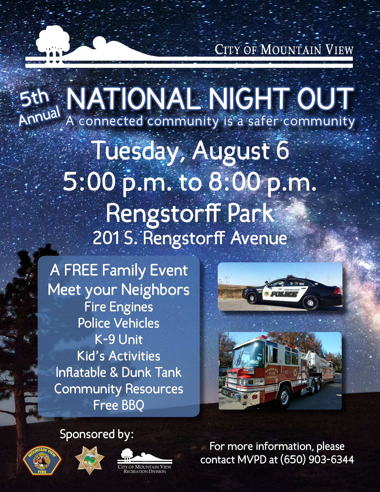
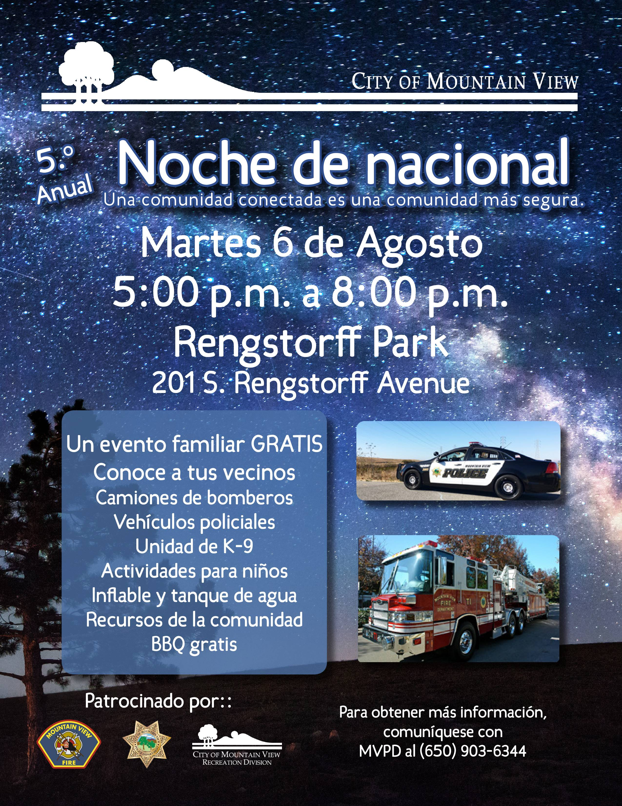

<section>
    <div class="row">
      <div class="large-12 columns">
	     <h1>Upcoming Events and Helpful City Resources</h1>
		 <a class="button button-rounded-hover" href="2019GuidetoCityPhone.pdf" target="_blank">2019 City Phone Numbers</a> <a class="button button-rounded-hover" href=" https://www.mountainview.gov/contact/services.asp" target="_blank">City Services</a> <a class="button button-rounded-hover" href="https://www.mountainview.gov/depts/pw/projects/capital_improvement_program.asp" target="_blank">Capital Improvements Schedule</a><br>
		 <p><b>Contact City Council</b> <br>Your civic participation is encouraged and appreciated. Please feel free to email the Council directly to share your thoughts and ideas: <br><a href="mailto:"citycouncil@mountainview.gov">citycouncil@mountainview.gov</a> <br><a href="mailto:Lisa.Matichak@mountainview.gov">Lisa.Matichak@mountainview.gov</a> <br><a href="mailto:Margaret.Abe-Koga@mountainview.gov">Margaret.Abe-Koga@mountainview.gov</a> <br><a href="mailto:Chris.Clark@mountainview.gov">Chris.Clark@mountainview.gov</a> <br><a href="mailto:John.McAlister@mountainview.gov">John.McAlister@mountainview.gov</a> <br><a href="mailto:Alison.Hicks@mountainview.gov">Alison.Hicks@mountainview.gov</a> <br><a href="mailto:Ellen.Kamei@mountainview.gov">Ellen.Kamei@mountainview.gov</a> <br><a href="mailto:Lucas.Ramirez@mountainview.gov">Lucas.Ramirez@mountainview.gov</a> <br></p>
		 <p><b>National Night Out 2019</b></p>
		 <div class="large-6 columns"><a href="2019NNO.pdf" target="_blank"></a></div>
		 <div class="large-6 columns"><a href="2019NNO.pdf" target="_blank"></a></div>
		 <br><br><p><br><b>Ask Mountain View</b><br>The City offers an online way to enable residents and visitors to quickly and easily email staff with questions, concerns, and compliments 24-hours-a-day, 7-days-a-week. The City’s <b><a href="https://clients.comcate.com/newrequest.php?id=128" target="_blank">Ask Mountain View</a></b> platform provides a list of topic area designations so questions can be routed to the correct City department and staff member, helping to ensure a speedy reply during regular business hours.</p>
		 <p><b>Caltrans</b><br>
		 The City is aware of the poor condition of the pavement on El Camino Real (ECR). ECR is owned and operated by the State of California Department of Transportation (Caltrans). Caltrans is currently in the environmental clearance phase to repave ECR from Highway 237/Grant Road to the San Mateo County line. As part of this project, Caltrans will also be upgrading the Americans with Disabilities Act (ADA) curb ramps. Caltrans expects to start design of the project in spring 2020 and begin construction in summer 2022.<br>To submit maintenance and other requests to Caltrains for ECR, highways, and other Caltrans property, <a href="https://csr.dot.ca.gov/" target="_blank">contact Caltrans here</a>.<br>
		 <a href="StreetImprovementList.pdf" target="_blank">Click here to see the list of City-owned streets that are scheduled for maintenance in 2018-19</a>.</p>
		 <b>Planning Department</b><br>The City of Mountain View Planning Division prepares a monthly report of private development projects and long range planning studies that are underway.  The projects are organized by Status - Under Review, Approved, and Under Construction. You can find the most up-to-date report on the City of Mountain View <a href="https://www.mountainview.gov/news/displaynews.asp?NewsID=793&TargetID=10" target="_blank">Planning division page</a>. </p>
		  <p><b>Mountain View Police Department</b><br>
		  Non-emergency phone: (650)903-6344</p>
	      <p><b>Utility Services</b><br>Finance Department: (650)903-6317<br>
				<ul><li>To open or close their water, wastewater and trash accounts</li></ul>
				Recology Mountain View at (650)967-3034 (Monday through Friday, 7:30 am to 4:30 pm.)<br>
				<ul><li>If the utility account is already open and customers want to make changes to the existing trash service </li></ul> </p>
		<p><b>Mountain View Rent Program (Community Stabilization and Fair Rent Act - CSFRA)</b><br>Mountain View Rental Housing Helpline: (650)282-2514 <br>CSFRA@housing.org<br>
			<ul><li>For questions about your rent, termination notice, change in terms of tenancy or help with filing a petition.</li>
			<li>Walk-in Office Hours are every Thursday from 12:00 p.m. to 2:00 p.m. in the Public Works 1st Floor Front Conference Room at City Hall (habla español)</li></ul></p>
		<p><b>Rapid Response Network</b><br>Phone: (408)290-1144 (to report ICE activity)<br><a href="https://www.pactsj.org/rapid-response-network-in-santa-clara-county" target="_blank">Click here for more information</a><br>
			<ul><li>If you see ICE on the street, if ICE knocks on your door or if ICE detains a loved one</li>
			<li>For rapid response and legal services related to immigration raids, arrests and incarceration</li></ul></p>
		<p><b>Animal Control: Silicon Valley Animal Control Authority (SVACA)</b><br>Phone: (408)764-0344 (leave a message)<br>Email: staff@svaca.com <br>Emergency After hours: (650)903-6395 (MVPD)<br>
			<ul><li>the care of injured, lost and abandoned companion animals, animal cruelty investigations, enforcement of animal laws, education and outreach programs, volunteer programs and much more.</li></ul></p>
		<p><b>Parks Division</b><br>231 North Whisman Road<br>Mountain View, CA 94043<br>Phone: (650) 903-6326<br>
			<ul><li>The protection and maintenance of 39 urban parks and 5.0 miles of bicycle and pedestrian trails along Stevens Creek, Permanente Creek and the Hetch-Hetchy Right-of-Way </lI>
			<li>Responsible for other regional open space throughout the City</li></ul></p>
		<p><b>Senior Center Monthly Newsletter</b> <br>Sign up to receive the Senior Center Monthly Newsletter via email by emailing seniorcenter@mountainview.gov</p>
		<p><b>Community Services Agency</b><br>204 Stierlin Rd. <br>Mountain View, CA 94043<br>Phone: (650) 968-0836<br>Hours: Monday – Friday (9AM – 12PM & 1:30PM – 4PM)<br>
			<ul><li>Emergency Finacial (Rent & Utilities) Assitance, Food & Nutrition Center, Senior Case Management and Homeless Services</li></ul></p>
		<p><b>Congresswoman Anna Eshoo (District Office)</b><br>698 Emerson Street<br>Palo Alto, California 94301<br>Telephone: (650) 323-2984 or (408) 245-2339 or (831) 335-2020<br>
			<ul><li>Assistance with a federal agency, such as the Social Security Administration, U.S. Citizenship and Immigration Services, the Department of Veterans Affairs, the Internal Revenue Service or any other federal government agency.</li></ul></p>
		<div class="large-6 columns">
			<p><b>Assemblymember Marc Berman (District Office)</b><br>5050 El Camino Real, Suite 117 <br>Los Altos, CA 94022<br>Tel: (650) 691-2121</p>
		</div>
		<div class="large-6 columns">
			<p><b>State Senator Jerry Hill (District Office)</b><br>1528 South El Camino Real, Suite 303<br>San Mateo, CA 94402<br>Phone: (650) 212-3313</p>
		</div>
		<ul><li>Assistance with a state agency, such as the Department of Motor Vehicles (DMV), California Department of Social Services, or any other state agency.</li></ul>
		<p><b>County Resources</b>
			<ul>
				<li><a href="https://www.sccgov.org/SITES/RDA/INFO/Pages/service.aspx" target="_blank">Service Requests on County Roads</a></li>
				<li><a href="https://www.sccgov.org/sites/ssa/debs/calfresh/Pages/overview.aspx" target="_blank">Food Assistance</a> </li>
				<li><a href="https://www.sccgov.org/sites/ssa/debs/hc/Pages/healthykids.aspx" target="_blank">Healthy Kids Program</a> - no cost or low cost comprehensive health coverage to Santa Clara County children with net non-exempt income below 300% of the Federal Poverty Level (FPL). This program is beneficial to children who are ineligible to Medi-Cal. </li>
				<li><a href="https://www.sccgov.org/sites/ssa/daas/Pages/daas.aspx" target="_blank">Aging and Adult Services</a></li>
		</ul>
		<p><b>Santa Clara Valley Water District</b>
			<ul>
			<li>Water District Main line: (408) 265-2600</li>
			<li>Water Conservation information and programs: (408) 630-2554 </li>
			<li>Pollution Hotline (24 hours): (888) 510-5151 </li>
			<li>Recruitment office - during business hours (7 a.m. to noon, 1 - 5 p.m.): (408) 630-2260 </li>
			<li>Parcel Tax Senior Exemption questions: (408) 630-2810 </li>
			<li>Contract Administration System (CAS): (408) 630-2992 </li>
			<li>Construction Administration Plan Room (questions regarding bids, plans and specifications):  (408) 630-3088 </li>
			<li>Well Permits/Inspections: (408) 630-2660</li>
			<li>Water Production Statements: (408) 630-2770</li>
			<li>Purchasing and procurement questions:  (408) 630-2888 </li>
			<li>Watershed Field Maintenance: (408) 630-2378 </li>
			</ul>
      </div>
    </div>
</section>
